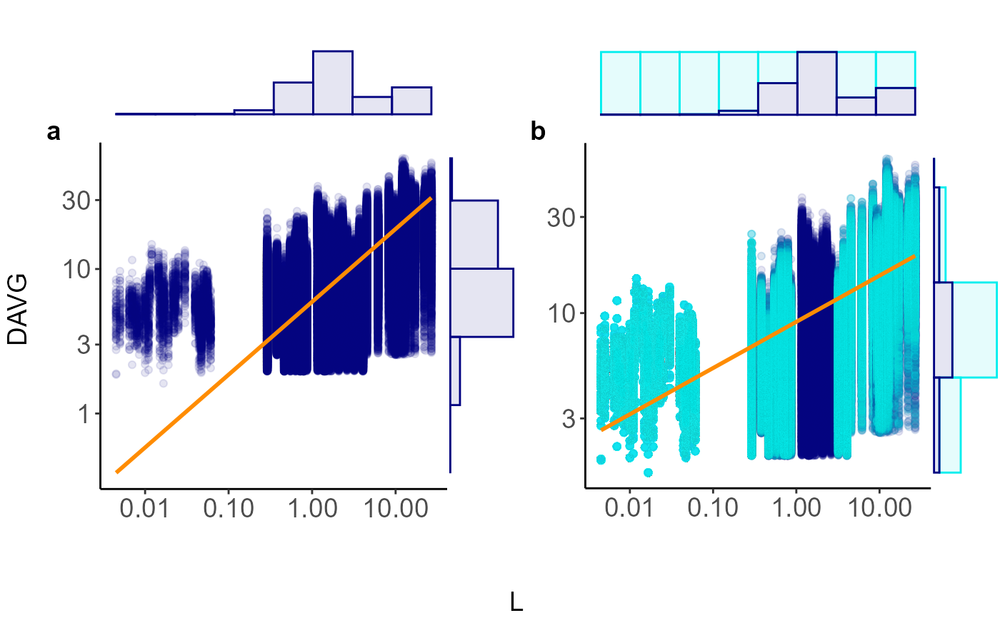

Visual comparison of original and balanced data using scatterplots and marginal histograms
plot_balanced_scaling.Rdplot_balanced_scaling() juxtaposes the raw data with the
bootstrap‑balanced sample returned by balanced_scaling().
Each panel shows a scatterplot overlaid with an SMA line and is wrapped
in marginal histograms that reveal how resampling fills sparse bins.
Arguments
- original_df
A data frame with the original observations.
- balanced_df
A data frame returned by
balanced_scaling(), which must contain a logical columnResampled.- var_x, var_y
Unquoted column names for the predictor and response.
- model_type
"power"(default),"exp", or"linear".- binwidth
Histogram bin width (on the binning scale). Can be called from bin summary (see "Examples").
- base
Logarithmic base when
scale = "log". Default10.- tag_letters
Two letters used to label the panels.
- x_lab, y_lab
Optional axis titles.
References
Simovic, M., & Michaletz, S.T. (2025). Harnessing the Full Power of Data to Characterise Biological Scaling Relationships. Global Ecology and Biogeography, 34(2). https://doi.org/10.1111/geb.70019
Author
Simovic, M. milos.simovic@botany.ubc.ca; Michaletz, S.T. sean.michaletz@ubc.ca
Examples
library(ggplot2)
#> Warning: package 'ggplot2' was built under R version 4.4.3
data(xylem_scaling_simulation_dataset)
res<- balanced_scaling(
data = xylem_scaling_simulation_dataset,
var_x = L,
var_y = DAVG,
min_per_bin = 100,
n_boot = 10,
seed = 1,
model_type = "power"
)
plot_balanced_scaling(
original_df = xylem_scaling_simulation_dataset,
balanced_df = res$first_boot,
var_x = L,
var_y = DAVG,
model_type = "power",
binwidth = res$bins$summary$bin_width[1],
base = 10,
tag_letters = c("a", "b"),
x_lab = NULL,
y_lab = NULL
)
#> Registered S3 methods overwritten by 'ggpp':
#> method from
#> heightDetails.titleGrob ggplot2
#> widthDetails.titleGrob ggplot2
